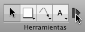
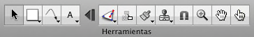

Consejos sobre la paleta de herramientas
Tecnología de expansión/contracción


OmniGraffle 5 incluye una avanzada tecnología de expansión/contracción. Por omisión, después de la herramienta Texto aparece un botón en el que puede hacerse clic para contraer la paleta de herramienta, manteniendo sólo los elementos situados más a la izquierda. Esto permite ahorrar un valioso espacio en la barra de herramientas para otros botones, así como expandir la paleta para utilizar el resto de herramientas cuando sea necesario.
Puede desplazar el separador en el panel de preferencias "Herramientas de dibujo" para cambiar qué herramientas están disponibles en el estado de paleta contraída, o quitar el botón de expansión.
Activación permanente de las herramientas
Por omisión, al hacer clic en una herramienta una vez, ésta se activa para un solo uso; después de dicho uso vuelve a activarse la herramienta Selección. Para recordárselo, aparecerá un pequeño icono “1” azul en la herramienta. 
Para activar una herramienta de forma permanente, haga clic de nuevo en ella. El icono desaparecerá para indicar que esa herramienta estará activa hasta que elija otra.
Puede cambiar este comportamiento en el panel de preferencias "Herramientas de dibujo", de manera que las herramientas estén siempre (o nunca) activadas permanentemente.
Información de una herramienta
Normalmente, los inspectores se utilizan para modificar un objeto seleccionado en el lienzo. Pero también puede usarlos para cambiar el estilo de los objetos que crean las herramientas. Mantenga pulsada la tecla Opción y haga clic en la herramienta Figura, Lápiz, Línea o Texto (o simplemente haga clic en ellas, según lo establecido en el panel de preferencias "Herramientas de dibujo"); el botón de herramienta se resaltará en el color seleccionado para indicarle que está siendo modificada. 
Mientras se modifica la herramienta, cualquier cambio que realice se aplica a la herramienta en sí. Por ejemplo, si hace que el trazo de la herramienta Línea sea rojo, cada línea que dibuje tendrá un trazo rojo.
Siempre puede seleccionar la opción Restaurar valores por omisión en el menú local de la herramienta para recuperar el comportamiento original.
Menús de estilo
Las herramientas Figura, Lápiz, Línea y Texto poseen menús de estilo que contienen diversos estilos aplicables a la herramienta. Para abrir el menú de una herramienta, haga clic en el triángulo situado en la esquina del botón correspondiente o mantenga pulsado el botón del ratón al hacer clic en el botón de la herramienta. 
El primer elemento del menú es el último estilo que ha definido.
OmniGraffle Pro incluye una lista de Estilos favoritos en la que puede añadir los estilos que desee conservar. Puede alternar libremente entre el estilo actual de la parte superior del menú y los estilos de la lista de favoritos. Seleccione Duplicar estilo para añadir una copia del estilo seleccionado a dicha lista. Seleccione Eliminar estilo para eliminar el estilo seleccionado de la lista. También puede añadir estilos a la lista de favoritos haciendo clic en un objeto con la tecla Control pulsada o haciendo clic en él con el botón derecho del ratón y seleccionando Añadir a Favoritos, o bien pulsando la tecla Opción al arrastrar un objeto hasta el botón de la herramienta.
La lista Estilos de lienzo muestra los estilos aplicables que hay en el lienzo. Si selecciona uno, una copia del mismo sustituirá al estilo actual.
La lista Estilos de modelo muestra los estilos disponibles en el modelo que está abierto. Si selecciona uno, una copia del mismo sustituirá al estilo actual.
Seleccione Ver información del estilo para que los inspectores muestren los ajustes de la herramienta de manera que pueda cambiar su estilo.
Seleccione Restaurar valores por omisión para devolver a la herramienta los ajustes de estilo originales.
Paleta de herramientas flotante
Si lo desea, puede abrir una ventana de paleta de herramientas independiente de la de la barra de herramientas. Para hacerlo, seleccione Paleta de herramientas en el menú Ventana. Arrastre la esquina de la paleta de herramientas flotante para cambiar su forma y coloque la ventana cerca de la ventana del documento para fijarla a ella magnéticamente.
Acceso rápido a las herramientas
En lugar de hacer clic en una herramienta, puede pulsar las teclas numéricas para activar las herramientas. Cada tecla del 1 al 0 corresponde a una herramienta de la paleta (de izquierda a derecha).
También puede configurar teclas rápidas en el panel de preferencias "Herramientas de dibujo".